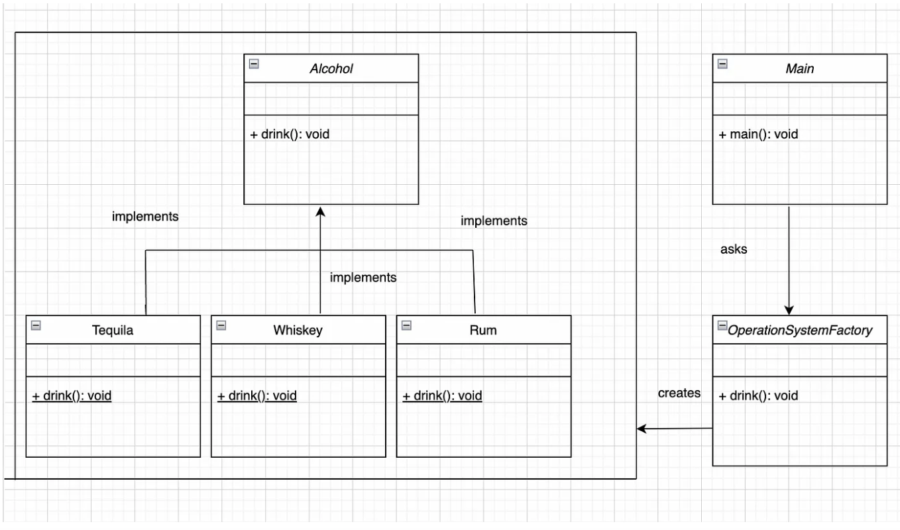

What is the factory design pattern ?
Factory design pattern ကတော့ creational design pattern အမျိုးအစားထဲက တခုဖြစ်ပီးတော့ java မှာတော့ တော်တော်လေးကိုအတွေ့ရများတဲ့ pattern တခုလို့ပြောလို့ရပါတယ် သူကဘယ်လိုမျိုးလဲ creational logic ကိုဖြုတ်ပီးတော့ commin interface တခုကိုသုံးပီးတော့ object တွေကိုဆောက်သွားတာမျိုးပါ အောက် က example လေးနဲ့တွဲလေ့လာလိုက်ရင်တော့ရှင်းသွားမှာပါ အောက် ကအရက်အမျိုးအစားထဲက ဖြစ်တဲ့ Tequila, Rum and Whiskey ဆိုမျိုး class သုံး ခုဆောက်ထားပါတယ် main class ထဲမှာ သူတို့ကို ခေါ်တဲ့အခါမှာ new operator ကိုလုံးဝမသုံးဘဲ ခေါ်သုံးထားပါတယ် ဘာတွေကောင်းကျိုးရလဲဆိုတော့ နောက် ထပ်အးက်အမျိုးအစားတခုထပ်ထည့်ချင်ရင် new operator သုံးပီး main class ထဲမှာ ထည့်ဆောက်စရာမလိုဘဲ OperatingSystemFactory ထဲမှာထည့်လိုက်တာနဲ့ Ok သွားပါပီ

Alcohol.java
public interface Alcohol {
public void drink();
}
Tequila.java
public class Tequila implements Alcohol {
@Override
public void drink() {
System.out.println(
“Tequila may be a comparatively healthier option than some other types of alcohol because it contains fewer calories, zero sugar, and zero carbohydrates”);
}
}
Whiskey.java
public class Whiskey implements Alcohol {
@Override
public void drink() {
System.out.println(
“According to multiple studies, a glass of whisky a day can help reduce your risk of heart disease and heart failure”);
}
}
Rum.java
public class Rum implements Alcohol {
@Override
public void drink() {
System.out.println(“Rum consumption can give you a healthy and strong heart.”);
}
}
OperationSystemFactory.java
public class OperationSystemFactory {
public Alcohol getInstance(String alcohol) {
if (alcohol.equals(“Tequila”)) {
return new Tequila();
} else if (alcohol.equals(“Rum”)) {
return new Rum();
} else {
return new Whiskey();
}
}
}
Main.java
public class Main {
public static void main(String[] args) {
OperationSystemFactory operationSystemFactory = new OperationSystemFactory();
Alcohol tequila = operationSystemFactory.getInstance(“Tequila”);
tequila.drink();
Alcohol whiskey = operationSystemFactory.getInstance(“Whiskey”);
whiskey.drink();
Alcohol rum = operationSystemFactory.getInstance(“Rum”);
rum.drink();
}
}